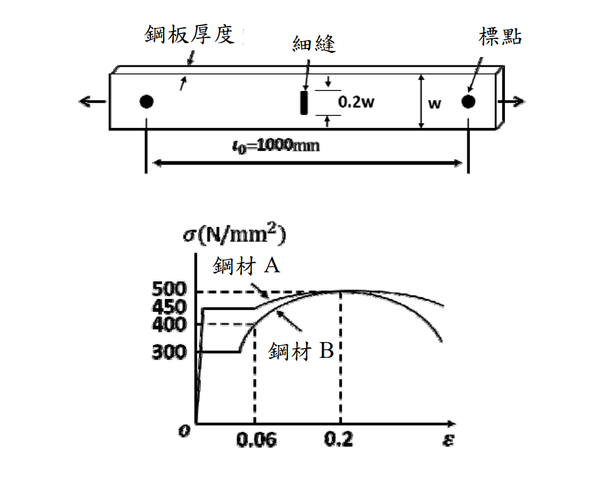

📄 題目正本：考卷原文・附圖・判讀清單（待確認）
SS-2018-1 題目正本
本檔只記錄考卷上寫了什麼、圖上畫了什麼，不含任何解法。解析見同資料夾
SS-2018-1.md。
判讀清單經使用者確認前，狀態為「待確認」；確認後本檔原則上不再修改（改動須回考卷原圖並記 log）。
| 項目 | 內容 |
|---|---|
| 考卷 | raw/exams/SS-2018_鋼結構設計.pdf 第 1 頁（頁次 2－1），第一題 |
| 考年 | 民國 107 年（2018） |
| 配分 | 25 分（㈠ 15、㈡ 10） |
| 附圖 | 1 張（細縫鋼板＋兩鋼材應力－應變曲線），SS-2018-1-fig-1.png |
| 判讀狀態 | 待確認（轉錄 2026-11-03，PyMuPDF 110 dpi 全頁＋附圖 400 dpi 局部目視（附圖為 489×163、335×249 點陣圖）＋抽出文字核對，盲讀後才比對既有解析） |
1. 考卷原文（逐字）
一、如圖，有一中間設有細縫（slit）之鋼板受拉力作用，此鋼件考慮分別使用應力-應變關係不同之兩種鋼材 A 與 B 製作。
㈠忽略應力/應變集中進行分析，試推估兩種材料之鋼件受最大拉力時標點間伸長量為何？（15 分）
㈡說明降伏比對鋼件伸長量之影響。（10 分）
2. 考卷給的公式、附表與參數
- 圖上數值：標點間距 $l_0$ = 1000 mm；板寬 w；細縫長 0.2w（位於板寬中央，與拉力方向垂直）。
- 應力－應變圖：縱軸 σ（N/mm²），刻度 300、400、450、500；橫軸 ε，刻度 0.06、0.2。
- 沒有給板厚數值、彈性模數、細縫沿長度方向的尺寸。
- 卷首注意事項：㈠可以使用電子計算器；㈡不必抄題；㈢本科目除專門名詞或數理公式外，應使用本國文字作答。
3. 附圖

圖面文字照錄：鋼板厚度；細縫；標點；0.2w；w；l₀=1000mm；σ(N/mm²)；鋼材 A；500；450；400；300；鋼材 B；o；0.06；0.2；ε。
4. 判讀清單
「把握」標不確定者請優先確認；解讀類項目（題目用字的意思）另標「解讀」。
| # | 項目 | 判讀 | 圖上／題文依據 | 把握 |
|---|---|---|---|---|
| 1 | 鋼材 A | 降伏 450 N/mm²、抗拉強度 500（ε = 0.2）；降伏比 0.9 | 圖上刻度（400 dpi） | 確定 |
| 2 | 鋼材 B | 降伏 300、抗拉強度 500（ε = 0.2）；ε = 0.06 時應力 400；降伏比 0.6 | 圖上刻度與虛線 | 確定 |
| 3 | 鋼材 A 平台長 | 平台末端與 0.06 虛線約同位置，圖上未標數值 | 400 dpi 目視（點陣圖） | 確定（解讀） |
| 4 | 細縫 | 寬方向長 0.2w → 細縫處淨寬 0.8w；細縫沿拉力方向的長度未標（極窄） | 圖 | 確定 |
| 5 | 標點 | 兩標點在細縫兩側，間距 1000 mm，伸長量以此段計 | 圖 | 確定 |
| 6 | 「忽略應力/應變集中」 | 細縫處淨斷面與其餘全斷面各自均勻受力 | 題文 | 確定（解讀） |
| 7 | 「最大拉力」 | 鋼件所能承受的最大拉力（由較弱斷面控制） | 題文 | 確定（解讀） |
轉錄：2026-11-03（SS-U2-2 題目正本推廣・批 1）
SS-2018-1 解析
考題編號：SS-2018-1
主分類： SS-U2-2 鋼結構材料特性
副分類： 無
設計法： 概念題
標籤： 降伏比 σ-ε曲線 伸長量 均勻伸長 應力集中 韌性 細縫鋼板 應變硬化
1. 原始題目重述 (Problem Restatement)
題目： 如圖，有一中間設有細縫（slit）之鋼板受拉力作用，此鋼件考慮分別使用應力-應變關係不同之兩種鋼材 A 與 B 製作。
(一) 忽略應力/應變集中進行分析，試推估兩種材料之鋼件受最大拉力時標點間伸長量為何？（15 分）
(二) 說明降伏比對鋼件伸長量之影響。（10 分）
已知條件（依考卷原圖）：
- 鋼板寬 $w$，中央細縫長 $0.2w$（垂直於拉力方向）→ 細縫處淨寬 $0.8w$，$A_n/A_g = 0.8$
- 標點間距 $l_0 = 1000$ mm
- 鋼材 A：降伏平台 $F_y = 450$ N/mm²，應變硬化後 $F_u = 500$ N/mm²（$\varepsilon = 0.2$）
- 鋼材 B：降伏平台 $F_y = 300$ N/mm²，應變硬化通過 $(\varepsilon, \sigma) = (0.06,\ 400)$，$F_u = 500$ N/mm²（$\varepsilon = 0.2$）
圖說（依考卷原圖 500–600 dpi 目視判讀，2026-11-01 更正）：「鋼材 A」箭頭指向從 450 平台延伸、在 $\varepsilon \approx 0.035$ 起應變硬化的上方曲線；「鋼材 B」箭頭指向從 300 平台延伸的下方曲線。兩曲線皆在 $\varepsilon = 0.2$ 達 500 N/mm²。虛線標示 B 曲線於 $\varepsilon = 0.06$ 時 $\sigma = 400$ N/mm²。降伏比 A = 450/500 = 0.90、B = 300/500 = 0.60。
2. 考題核心精神與出題者意圖 (Core Concepts & Examiner's Intent)
核心觀念： 有缺口（細縫）的構件，最大拉力由淨斷面達 $F_u$ 決定：$P_{max} = F_u A_n = 0.8F_uA_g$。此時全斷面（細縫以外的絕大部分長度）應力只有 $P_{max}/A_g = 0.8F_u = 400$ N/mm²。
- 若 $F_y < 0.8F_u$（降伏比 < $A_n/A_g$）→ 全斷面在破斷前已降伏、硬化 → 全長參與塑性變形 → 伸長量大
- 若 $F_y > 0.8F_u$（降伏比高）→ 全斷面始終彈性，塑性只集中在細縫處極短的長度 → 伸長量極小
「忽略應力/應變集中」的意思是：細縫斷面與全斷面各自以均勻應力計算（不考慮缺口尖端的應力放大），不是指全長應變都等於 $\varepsilon_u$。
出題者意圖： 這是耐震鋼材限制降伏比（SN 鋼 $YR \le 0.80$）的物理理由——構件在螺栓孔、缺口處淨斷面較小，降伏比過高時塑性變形無法擴散到全長，構件變形能力喪失。
3. 解題戰略地圖與陷阱分析 (Strategic Roadmap & Trap Analysis)
作戰計畫：
1. 由圖讀兩材料 $F_y$、$F_u$（A 450／500、B 300／500）
2. 最大拉力：淨斷面達 $F_u$ → $P_{max} = 500 \times 0.8wt$
3. 全斷面應力 $\sigma_g = P_{max}/A_g = 400$ N/mm²
4. 由 σ-ε 圖查 $\sigma_g$ 對應之應變 → 乘 $l_0$ 得伸長量（細縫處長度極短，貢獻忽略）
5. 以 $YR$ 與 $A_n/A_g$ 的關係說明影響
關鍵陷阱：
| 陷阱 | 說明 | 應對 |
|---|---|---|
| ❌ 把 A、B 看反 | A 是 450 平台、B 是 300 平台（舊解對調） | 看圖上箭頭指的曲線 |
| ❌ 以為全長應變 = $\varepsilon_u$ | 最大拉力時只有淨斷面達 $F_u$；全斷面應力只有 $0.8F_u$ | 先求 $P_{max}$，再求全斷面應力 |
| ❌ 用降伏應變或極限應變直接乘 $l_0$ | 要查「全斷面應力 400」在 σ-ε 圖上對應的應變 | B 查到 0.06；A 在彈性段 |
3.5 變數層次分析（Variable Hierarchy Analysis）
複習提示：解題後，在每個卡住的知識點「卡關?」欄標記
⚠；第二次複習時只看有⚠的項目。
最終目標： 最大拉力時全斷面應力 400 N/mm² → A 彈性 $\Delta_A \approx 2$ mm、B 硬化段 $\Delta_B \approx 60$ mm → 降伏比 < $A_n/A_g$ 才能全長降伏
主要公式（$\boxed{\phantom{x}}$ = 未知，待推導）
$$\boxed{P_{max}} = F_u A_n = F_u(0.8w)t, \qquad \boxed{\sigma_g} = \frac{P_{max}}{A_g} = 0.8F_u$$
$$\boxed{\Delta} \approx \varepsilon(\sigma_g) \times l_0, \qquad \text{全斷面降伏條件：} \frac{F_y}{F_u} < \frac{A_n}{A_g}$$
L1：題目直接給定
| 符號 | 數值 | 說明 |
|---|---|---|
| $l_0$ | 1000 mm | 標點間距 |
| 細縫 | $0.2w$ | 淨寬 $0.8w$ |
| 鋼材 A | $F_y = 450$、$F_u = 500$ N/mm² | 降伏比 0.90 |
| 鋼材 B | $F_y = 300$、$F_u = 500$ N/mm²；$\sigma = 400$ 時 $\varepsilon = 0.06$ | 降伏比 0.60 |
L2：需知識點推導
| 符號 | 公式 / 來源 | 卡關? |
|---|---|---|
| $\sigma_g$ | $0.8 \times 500 = 400$ N/mm²（A、B 相同） | |
| A 的 $\varepsilon$ | $400 < F_y = 450$ → 彈性：$400/E = 400/205000 = 0.00195$ | |
| $\Delta_A$ | $0.00195 \times 1000 \approx 2.0$ mm | |
| B 的 $\varepsilon$ | $400 > F_y = 300$ → 硬化段，圖讀 $\varepsilon = 0.06$ | |
| $\Delta_B$ | $0.06 \times 1000 = 60$ mm |
L3：深層知識（不懂就卡住）
| 知識點 | 說明 | 卡關? |
|---|---|---|
| 淨斷面控制最大拉力 | 缺口處面積最小，最先達 $F_u$ | |
| 全斷面降伏條件 | $F_yA_g < F_uA_n$ ⇔ $YR < A_n/A_g$ | |
| 降伏比與構件變形能力 | 耐震鋼材限制 $YR \le 0.80$，使有孔構件仍能全長降伏 |
4. 步驟化詳細計算過程 (Step-by-Step Detailed Calculation)
(一) 最大拉力時標點間伸長量
Step 1：最大拉力（細縫淨斷面達 $F_u$，兩材料 $F_u$ 皆 500 N/mm²）
$$P_{max} = F_u A_n = 500 \times 0.8wt = 400\,wt\ \text{(N)}$$
Step 2：全斷面（細縫以外）應力
$$\sigma_g = \frac{P_{max}}{wt} = 400\ \text{N/mm}^2$$
Step 3：查 σ-ε 圖求全斷面應變、計算伸長量（細縫沿拉力方向的長度極小，該處局部大應變對 1000 mm 標距的貢獻忽略不計；E 題目未給，取 $2.05 \times 10^5$ N/mm²）
鋼材 A（$F_y = 450$）：$\sigma_g = 400 < 450$，全斷面仍在彈性範圍
$$\varepsilon_A = \frac{400}{2.05 \times 10^5} = 0.00195 \quad\Rightarrow\quad \boxed{\Delta_A \approx 0.00195 \times 1000 \approx 2\ \text{mm}}$$
鋼材 B（$F_y = 300$）：$\sigma_g = 400 > 300$，全斷面已降伏並進入應變硬化，由圖讀 $\sigma = 400$ 時 $\varepsilon = 0.06$
$$\boxed{\Delta_B \approx 0.06 \times 1000 = 60\ \text{mm}}$$
雙路徑檢核： 以力平衡反推——若 A 的全斷面要降伏，需 $P \ge F_yA_g = 450wt$，但淨斷面在 $P = 400wt$ 時已達 $F_u$ 而斷裂，故 A 全斷面不可能降伏 ✓；B 全斷面降伏只需 $300wt < 400wt$ ✓。
(二) 降伏比對伸長量之影響
| 材料 | $F_y$ | $F_u$ | 降伏比 | 最大拉力時全斷面狀態 | 伸長量 |
|---|---|---|---|---|---|
| A | 450 | 500 | 0.90 | 彈性（400 < 450） | ≈ 2 mm |
| B | 300 | 500 | 0.60 | 降伏＋硬化（ε = 0.06） | ≈ 60 mm |
- 全斷面能否降伏取決於 $F_yA_g$ 與 $F_uA_n$ 的大小：$YR = F_y/F_u < A_n/A_g$（本題 0.8）時，全斷面在淨斷面斷裂前就降伏，塑性變形擴散到整根構件，伸長量大、破壞有預警
- 降伏比高於 $A_n/A_g$ 時（A），塑性只集中在細縫處，構件整體幾乎沒有伸長就斷裂，呈現類似脆性的行為
- 這就是耐震用鋼（SN 鋼）要求 $YR \le 0.80$ 的原因：螺栓孔、缺口處 $A_n/A_g$ 常在 0.8 左右，降伏比必須低於此值，構件才有足夠的變形能力（韌性）
5. 關鍵爭議點與進階探討 (Critical Issues & Advanced Discussion)
5.1 「忽略應力/應變集中」的意思
指不考慮細縫尖端的應力放大係數 $K_t$，以淨斷面與全斷面的平均應力分析；並不表示「全長應變都達 $\varepsilon_u$」。若全長都達 $\varepsilon_u$，全斷面應力須達 $F_u$，此時淨斷面應力 $F_u/0.8 > F_u$，早已斷裂，自相矛盾。
5.2 更正說明
舊版解答把 A、B 兩曲線對調（稱 A 降伏 300、B 降伏 400／極限 450），並以「全長均勻達 $\varepsilon_u$」得 $\Delta_A = 200$、$\Delta_B = 60$ mm，結論變成「降伏比低的材料 $\varepsilon_u$ 大」，偏離本題「降伏比 vs 淨斷面比」的考點。依原圖 A 為 450 平台、B 為 300 平台，正確答案 $\Delta_A \approx 2$ mm、$\Delta_B \approx 60$ mm。
5.3 考場建議
- 一定要寫出 $P_{max} = F_uA_n$ 與 $\sigma_g = 0.8F_u = 400$ 這條邏輯鏈
- 第（二）小題點出 $YR < A_n/A_g$ 的條件與 SN 鋼 $YR \le 0.80$ 的關聯即可拿滿分
6. 依最新規範（AISC 360-16／-22）對照
AISC 360 D2 拉力構材以「全斷面降伏 $F_yA_g$」與「淨斷面斷裂 $F_uA_e$」取小值，並以不同 $\phi$（0.90／0.75）反映希望降伏先於斷裂；AISC 341 耐震規定以 $R_y$、$R_t$ 期望強度與 $A_e/A_g$ 檢核（如斜撐構材淨斷面補強），本質即本題 $YR$ 與 $A_n/A_g$ 的關係。
修正日期：2026-11-01（依考卷原圖 500–600 dpi：鋼材 A 為 450 平台、B 為 300 平台，兩者 $F_u$ = 500，原解 A、B 對調且誤以「全長均勻達 $\varepsilon_u$」計算。更正為最大拉力由細縫淨斷面（0.8w）達 $F_u$ 控制，全斷面應力 400 N/mm²：A 彈性 $\Delta_A$ 200 → ≈ 2 mm、B 硬化 $\Delta_B$ ≈ 60 mm；（二）改以 $YR < A_n/A_g$ 說明）
驗證狀態：unverified